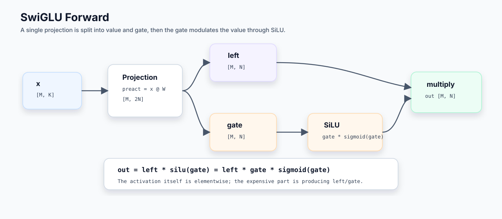
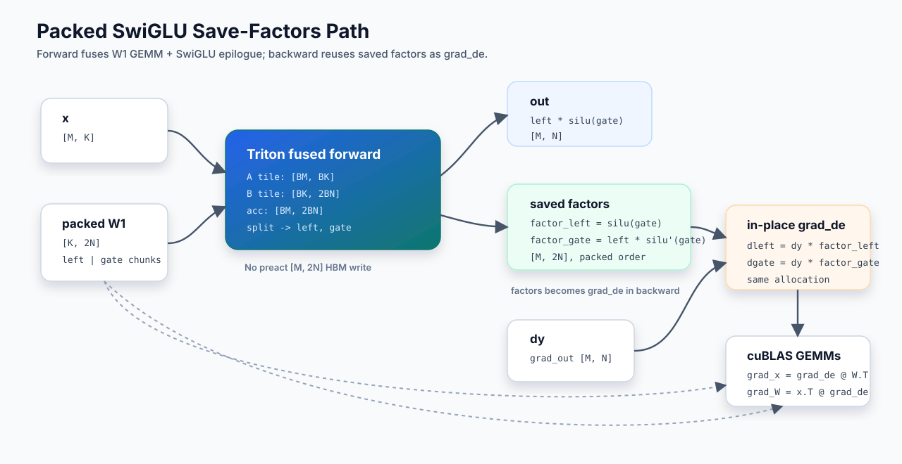
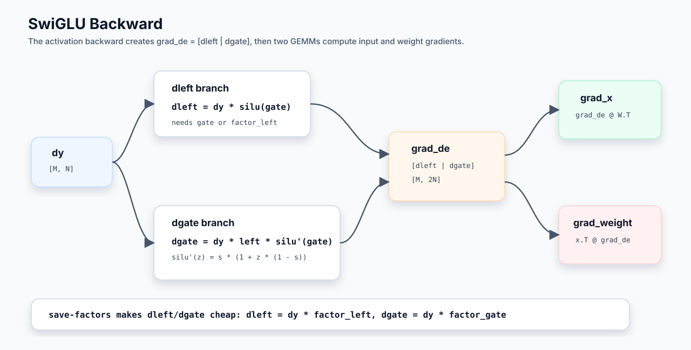
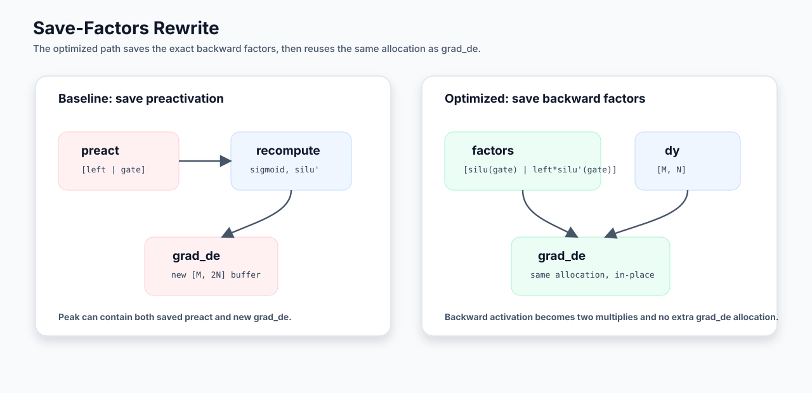
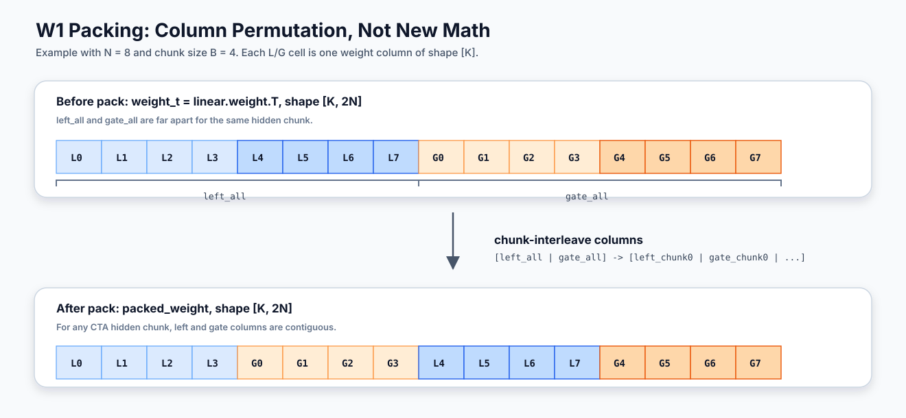
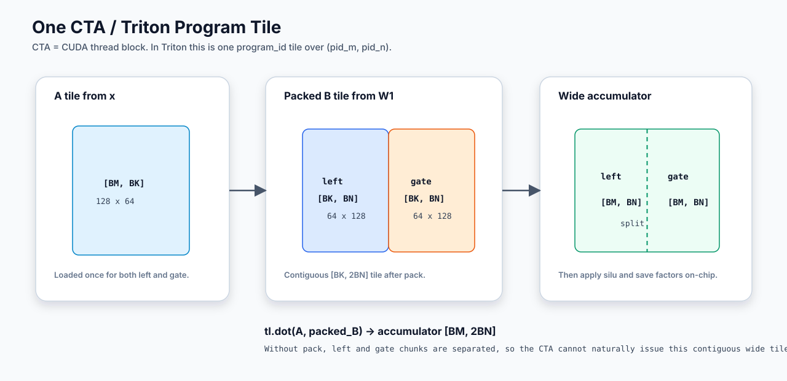
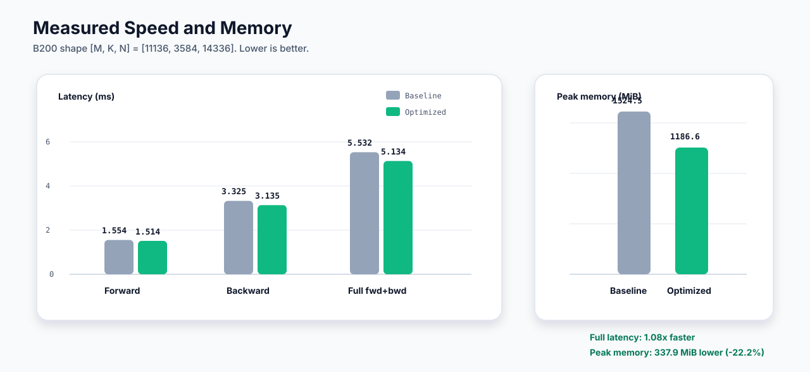

Fused SwiGLU Wide Packed Save-Factors 实现说明
这份文档只解释当前保留下来的 packed save-factors 方案：为什么这样算、forward/backward 怎么走、正确性如何判断、性能和显存收益来自哪里。
核心思路是：forward 用一个 wide GEMM tile 同时算出 left 和 gate，直接完成 SwiGLU epilogue，并保存 backward 所需的两个 factor；backward 不再保存或重读完整 preactivation，而是把 saved factors 原地变成 grad_de，再交给两个高性能 GEMM 消费。
原理
普通 SwiGLU Forward
SwiGLU 是 GLU 的一个变体：一次 linear projection 产出两半，一半作为 value，一半作为 gate。这里记作 left 和 gate。
x: [M, K]
linear weight: [2N, K] # 普通 PyTorch Linear 权重布局
packed_weight: [K, 2N] # 内部 packed 布局
left: [M, N]
gate: [M, N]
out: [M, N]
factors: [M, 2N]
grad_out/dy: [M, N]
grad_de: [M, 2N]普通实现可以写成：
preact = x @ W # [M, 2N]
left, gate = split(preact)
out = left * silu(gate)其中：
sigmoid(z) = 1 / (1 + exp(-z))
silu(z) = z * sigmoid(z)
out = left * gate * sigmoid(gate)

最关键的差别是：baseline 会 materialize preact=[left|gate]；save-factors 方案不保存原始 preactivation，只保存 backward 公式真正需要的两个 factor。
普通 SwiGLU Backward
记 dy = dL / dout。因为 out = left * silu(gate)，所以对两半 projection 输出求导：
dleft = dy * silu(gate)
dgate = dy * left * silu'(gate)SiLU 的导数是：
s = sigmoid(gate)
silu'(gate) = s * (1 + gate * (1 - s))于是：
dleft = dy * gate * sigmoid(gate)
dgate = dy * left * sigmoid(gate) * (1 + gate * (1 - sigmoid(gate)))grad_de 就是 loss 对第一层 projection 输出 [left|gate] 的梯度：
grad_de = dL / d[left, gate]
= [dleft, dgate]它随后被两个 GEMM 消费：
grad_x = grad_de @ W.T
grad_W = x.T @ grad_de如果权重以 packed layout 维护，上面第二个式子的输出列顺序也自然是 packed 的，不需要在 backward 里额外 unpack。

Save-Factors 改写
普通 backward 需要从 saved preactivation 里重新计算 sigmoid(gate)、silu(gate) 和 silu'(gate)。save-factors 方案把这一步提前到 forward 里。
forward 保存：
factor_left = silu(gate)
factor_gate = left * silu'(gate)
factors = [factor_left | factor_gate]backward activation 部分就退化成两个逐元素乘法：
dleft = dy * factor_left
dgate = dy * factor_gate这也是为什么它既能减少 backward 的 activation 计算，又能把 factors 原地覆盖成 grad_de，避免再额外分配一张完整的 [M, 2N] 临时 tensor。

Packed Weight Layout
packed_weight 不是简单转置，而是把 left/gate 按 hidden chunk 交错摆放。普通布局是：
[left_all | gate_all]packed 布局是：
[left_chunk0 | gate_chunk0 | left_chunk1 | gate_chunk1 | ...]
用一个小例子看，假设 hidden 一半宽度是 8，每个 chunk 宽度是 4：
N = 8
chunk width = 4普通转置后列方向是：
weight_t columns:
| L0 | L1 | L2 | L3 | L4 | L5 | L6 | L7 | G0 | G1 | G2 | G3 | G4 | G5 | G6 | G7 |
<----------- left_all -----------> <----------- gate_all ----------->pack 后列方向变成：
packed_weight columns:
| L0 | L1 | L2 | L3 | G0 | G1 | G2 | G3 | L4 | L5 | L6 | L7 | G4 | G5 | G6 | G7 |
<--- left chunk 0 ---> <--- gate chunk 0 ---> <--- left chunk 1 ---> <--- gate chunk 1 --->这样每个 CTA 负责一个 hidden tile 时，就能连续读到一组 [left_chunk | gate_chunk]：
B tile = packed_weight[:, current_2BN_tile]
= [left_chunk | gate_chunk]然后用一个 wide dot 同时算出 left 和 gate：
acc = tl.zeros((BM, 2 * BN), dtype=tl.float32)
acc = tl.dot(a_tile, b_tile, acc)这就是 packed single-wide 比 dual-dot 更稳定的原因：一个 CTA 内部只做一次 wide GEMM 主循环，left/gate 共享同一份 x tile load 和同一个 accumulator 组织。
实现流程
Forward

forward 是一个 persistent/TMA 风格的 wide GEMM epilogue kernel。每个 CTA 负责一个 [M tile, N tile]，但权重 tile 宽度是 2N，所以 accumulator 形状是 [BM, 2BN]。
1. 读取 x tile: [BM, BK]
2. 读取 packed weight tile: [BK, 2BN] = [left_chunk | gate_chunk]
3. K 维循环累加 wide GEMM: accumulator [BM, 2BN]
4. split accumulator: left [BM, BN], gate [BM, BN]
5. 计算 out: left * silu(gate)
6. 保存 factors: [silu(gate) | left * silu'(gate)]
7. 写出 out 和 factorsforward 实际写出的 tensor 是：
out = left * silu(gate)
factors = [factor_left | factor_gate]这里不会写出完整原始 preactivation：
preact = [left | gate]因此第一层 GEMM、SwiGLU activation、factor save 三件事被放进同一个 kernel；baseline 则通常会先写出 [M, 2N] preactivation，再由 activation kernel 读取它。
Backward
backward 分成一个轻量 activation-gradient kernel 和两个大 GEMM。
1. 读取 dy: [M, N]
2. 读取 factors: [M, 2N] = [factor_left | factor_gate]
3. 原地覆盖:
factor_left -> dleft = dy * factor_left
factor_gate -> dgate = dy * factor_gate
4. 得到 grad_de: [M, 2N] = [dleft | dgate]
5. GEMM 计算 grad_x
6. GEMM 计算 grad_weight同一块 allocation 从：
factors = [factor_left | factor_gate]变成：
grad_de = [dleft | dgate]随后两个大 GEMM 分别是：
grad_x = grad_de @ packed_weight.t()
grad_weight = x.t() @ grad_de这两个 GEMM 当前保留 cuBLAS/PyTorch matmul，因为实测自写 Triton reduction GEMM 没有超过 cuBLAS。
这里没有把两个 backward GEMM 强行合成一个 kernel。原因是 grad_x 和 grad_weight 的 reduction 方向不同：一个沿 hidden/output 维消费 grad_de，另一个沿 batch/token 维消费 grad_de。强行合并通常会牺牲 GEMM 主体效率，抵消少一次 kernel launch 的收益。
正确性
这个方案保存的是 BF16 factors，不是原始 preactivation，因此它和 baseline 不应该按 bitwise identical 判断。正确性口径是：forward 输出、grad_x、grad_weight 都和 save-factors 语义下的参考结果对齐，误差维持在 BF16 factor-save 的合理范围内。
小 shape 上常见误差量级：
out_rel ~0.006
grad_x_rel ~0.006
grad_weight_rel ~0.003需要注意：backward 会原地覆盖 saved factors，所以这套方案适合普通训练里的单次 backward。重复 backward 或依赖 backward 后的 saved factors，都不属于这个 fast 方案的正确语义。
另外，grad_weight 的列顺序会跟 packed weight 保持一致，因为 grad_de 的列顺序就是 packed 的 [left_chunk | gate_chunk | ...]。这意味着 backward 不需要额外 unpack；优化器可以直接维护 packed parameter。
性能
显存收益
baseline 逻辑大致是：
preact = F.linear(x, W) # [M, 2N]
out = triton_swiglu(preact) # [M, N]为了 backward，autograd 需要保留 preact。backward 时还会生成：
grad_de [M, 2N]所以峰值里会同时出现：
preact [M, 2N] + grad_de [M, 2N]save-factors 方案只保留一张 [M, 2N]：
forward: factors [M, 2N]
backward: factors 原地覆盖成 grad_de [M, 2N]也就是说它不是完全不存，而是把“保存 preact + 另分配 grad_de”变成 “保存 factors，然后原地变成 grad_de”。
在 B200、shape [M, K, N] = [11136, 3584, 14336] 上，最近一次观测到显存峰值少约 338 MiB。这个数字不会严格等于单个 tensor 的理论大小，因为 CUDA allocator、cuBLAS 临时 buffer、gradient buffer、reserved memory 都会影响峰值。
速度收益
速度收益主要来自三点：
1. forward 把第一层 GEMM、SwiGLU epilogue、factor save 放进一个 kernel。
baseline 是 F.linear 生成 [M, 2N]，再由 Triton SwiGLU kernel 读它、算 activation、写 [M, N]。
2. backward activation 不再重算 sigmoid 和 silu'。
baseline backward 需要从 saved preact 里读 left/gate 并计算 sigmoid、 silu、silu'。save-factors 已经把两个 factor 存好了，backward activation kernel 只做两个 multiply。
3. factors 原地覆盖成 grad_de，减少 backward 峰值和 allocator 压力。
后面的 grad_x、grad_weight 仍然交给 cuBLAS，避免自写 GEMM 主体退化。
实现差异对比
| 阶段 | Baseline | Optimized | 主要收益 |
|---|---|---|---|
| Forward | 先做 F.linear 写出 [M, 2N] preactivation，再由 activation kernel 读回并写出 [M, N]。 |
一个 packed wide GEMM epilogue kernel 同时完成 projection、SwiGLU 和 factor save。 | 少一次 preactivation HBM 往返，少一个 activation kernel 边界。 |
| Backward activation | 从 saved preactivation 重新计算 sigmoid、SiLU 和 SiLU 导数，再生成 grad_de。 |
读取 saved factors，两个 multiply 后原地覆盖成 grad_de。 |
减少 activation 计算，并复用 factors allocation。 |
| Backward GEMM | grad_x 和 grad_weight 由高性能 GEMM 完成。 |
保持两个大 GEMM 不变，只改变它们消费的 grad_de 生成方式。 |
避免自写 GEMM 退化，收益集中在可融合的 epilogue/activation 部分。 |
| Saved tensor | 保存 preact，backward 期间还会生成另一张 grad_de。 |
保存 factors，backward 时原地变成 grad_de。 |
显存峰值更低，allocator 压力更小。 |
实测结果
| 指标 | Baseline | Optimized | 变化 | 收益 |
|---|---|---|---|---|
| Forward | 1.554 ms | 1.514 ms | -0.040 ms | 1.03x |
| Backward | 3.325 ms | 3.135 ms | -0.190 ms | 1.06x |
| Full fwd+bwd | 5.532 ms | 5.134 ms | -0.398 ms | 1.08x |
| Peak memory | +1524.5 MiB | +1186.6 MiB | -337.9 MiB | -22.2% |

在这个 shape 上，优化后的 full fwd+bwd 从 5.532 ms 降到 5.134 ms，约 1.08x；peak memory 从 +1524.5 MiB 降到 +1186.6 MiB，约少 338 MiB。
当前最稳的结论是：forward 做 packed wide GEMM + fused SwiGLU epilogue + save factors；backward 只融合 activation-gradient 和原地覆盖，两个大 GEMM 保持 cuBLAS。